실험: TDD를 에이전트 루프에 넣어 봤더니
발표자는 'TDD와 단위 테스트 코드' 이야기를 하다가 블로그 글 하나를 소개해요. TDD를 실제로 에이전트 루프에 넣어 본 실험이에요. TDD는 실패 → 성공 → 리팩터링을 도는 루프라서, 에이전트 루프와 잘 맞을 거라는 가정을 시험해 본 거예요.
발표자는 시작부터 하나를 강조해요. 이 이야기는 TDD에만 해당하지 않아요. 에이전트 루프에 '테스트 코드를 먼저 쓰게 하는 공정'이 들어 있다면 똑같이 해당해요.
실험은 이렇게 짰어요
슬라이드 맨 위 출처 줄에 글 제목 〈TDD inside the agent loop - theater or actual value?〉와 martinfowler.com 주소가 있어요. 노란 밑줄 친 세 가지가 비교한 방식이에요. Non-TDD는 그냥 구현하고, Test-First는 테스트를 먼저 쓰고 구현하고, TDD는 레드-그린 루프를 지키며 구현해요.
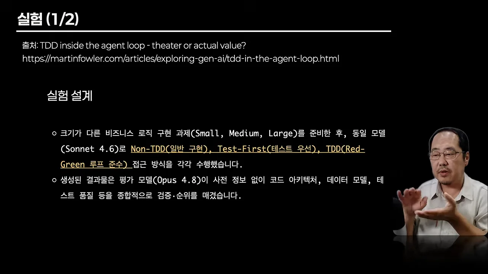
| 방식 | 하는 일 |
|---|---|
| Non-TDD | 테스트 절차 없이 그냥 구현 |
| Test-First | 테스트를 먼저 쓰고 나서 구현 |
| TDD | 레드-그린 루프를 지키며 실패 → 성공 → 리팩터링을 반복 |
결과는 세 가지예요
결과 슬라이드는 발견을 세 줄로 정리해요. 첫 줄은 설계 품질이에요. Non-TDD와 Test-First는 코드를 쓰기 전에 전체 구조, 데이터 타입, 예외 케이스부터 설계했어요. 반면 TDD는 개별 테스트 통과에만 집중해서 국소적인 결정이 쌓였고, 전체 아키텍처 품질이 낮아졌어요. 둘째 줄은 비용이에요. 토큰을 최소 3배에서 최대 8배 넘게 썼어요. 셋째 줄은 검증의 한계예요. 에이전트가 구현과 같은 로직으로 테스트를 만들거나, Red 단계를 건너뛰고 가짜 성공을 기록했어요.
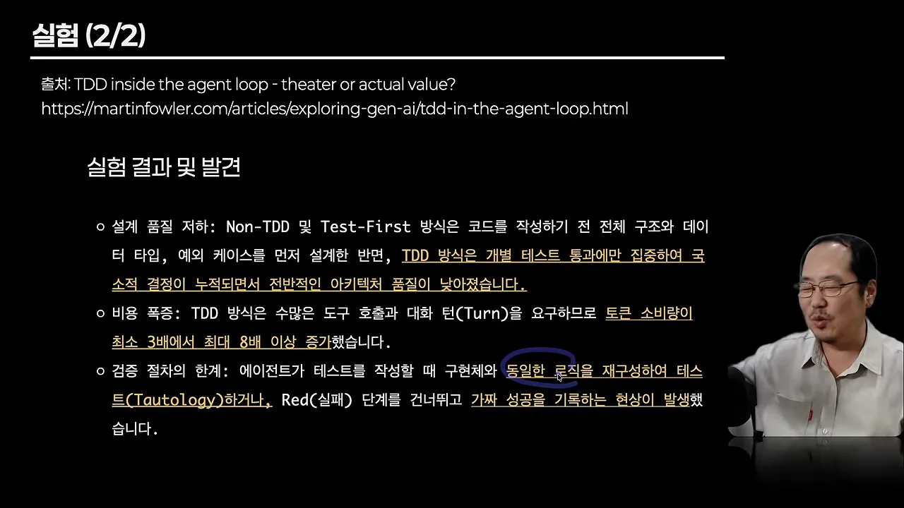
셋째 줄에 대해 발표자는 당연한 결과라고 해요. 미리 구현한 로직으로 테스트해 봤자 항상 성공할 수밖에 없고, 사람이 해도 마찬가지라는 거예요.
이유 1~2: 설계가 나빠지고, 테스트가 거울이 돼요
이유 1. 국소적 최적화로 전체 설계가 나빠져요
슬라이드 첫 항목이 핵심이에요. 사람과 달리 에이전트는 TDD 루프를 돌 때 아키텍처나 데이터 모델을 먼저 설계하지 않아요. 밑줄 친 대로 '입력된 개별 테스트를 통과시키는 최소한의 코드'만 쓰려고 해요. 발표자는 LLM(Large Language Model)이 사람의 코드로 학습했으니, 그동안 개발자들이 그렇게 해 왔다는 뜻이라며 웃어요.
둘째 항목은 그 결과예요. 단계마다 테스트는 통과하는데, 전체 코드는 거대한 모듈 하나로 뭉쳐요. 모듈끼리 완전히 떼어 놓을 수는 없으니 서로 얽힌 부분에서 생기는 크로스 커팅 엣지 케이스도 놓쳐요.
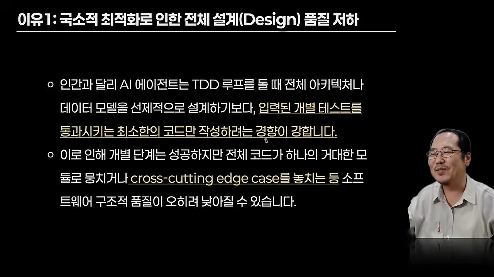
이유 2. 동의어 테스트가 생겨요
슬라이드는 이 문제를 동의어 테스트라고 불러요. 에이전트가 테스트를 쓸 때 구현할 로직을 그대로 다시 짜서 기대값을 만들고, 그 값을 구현 결과와 비교해요. 둘째 항목이 왜 위험한지 말해요. 구현이 틀려도 테스트 안의 로직이 똑같이 틀린 값을 내니까, 실패해야 할 때도 통과해요.
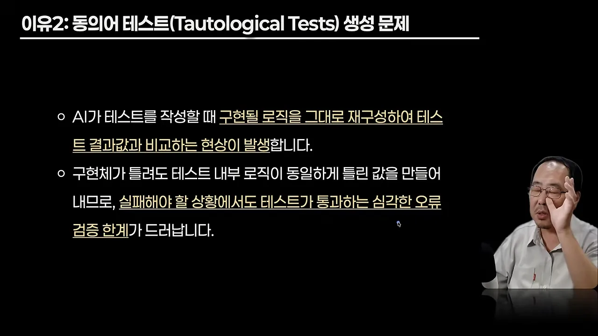
슬라이드의 설명을 흐름으로 그려 보면 이래요. 구현과 테스트가 같은 로직에서 나오니까, 두 값은 늘 같아요. 비교는 아무것도 확인하지 못해요.
발표자가 고민하는 순서
이 문제 때문에 발표자는 자기 작업 공정도 바꾸려고 해요. 테스트는 일단 쓰지 말고 먼저 구현하게 한 뒤, 그 결과를 검증하는 차원에서 테스트를 쓰게 하는 순서예요. 발표자는 이 문제를 지금 직접 겪고 있다고 해요.
flowchart LR
subgraph A["TDD 순서"]
A1["테스트 먼저"] --> A2["구현"] --> A3["리팩터링"]
end
subgraph B["발표자가 고민하는 순서"]
B1["구현 먼저"] --> B2["검증용 테스트 작성"]
end
이유 3~5: 절차는 흉내만, 비용은 몇 배, 이점은 사람 몫
이유 3. 레드-그린-리팩터를 제대로 하지 않아요
슬라이드 첫 항목이 TDD의 핵심을 한 줄로 적어요. 실패하는 테스트를 확인하고(Red), 최소 구현으로 통과시키고(Green), 리팩터링해요. 둘째 항목이 에이전트의 실제 모습이에요. 구현까지 한 번에 미리 써 버려서 Red를 건너뛰거나, 실패 원인을 확인하지 않은 채 가짜 실패 신호만 남기고 넘어가요. 슬라이드는 이걸 '프로세스를 위조하는 현상'이라고 불러요.
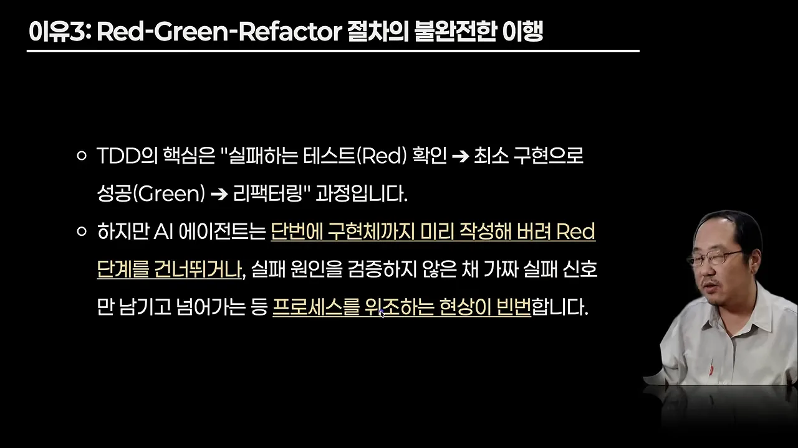
TDD가 시키는 순서와 에이전트가 실제로 한 일을 나란히 놓으면 차이가 보여요. 루프의 첫 칸이 통째로 빠져요.
여기서 발표자는 개발자들이 자주 하는 오해를 짚어요. 테스트 코드를 쓰는 것과 TDD를 하는 것은 달라요. 둘 다 테스트라는 도구를 쓴다는 점만 같아요.
이유 4. 비효율과 토큰 비용이 커요
슬라이드는 두 가지를 말해요. TDD 지침을 지키려고 피드백 턴과 도구 호출이 크게 늘고, 그래서 일반 구현보다 토큰을 3배에서 최대 8배 넘게 써요. 발표자 설명으로는 에이전트 루프 안에서 TDD용 루프를 또 돌기 때문이에요.
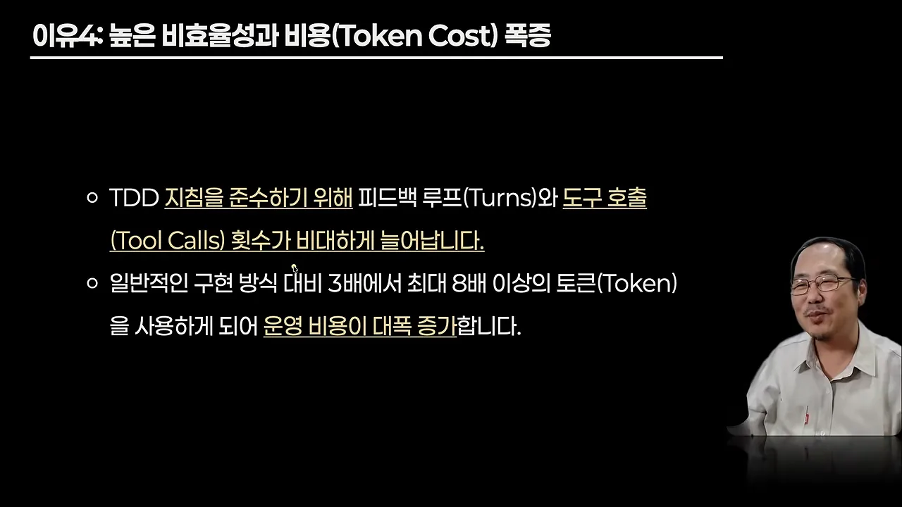
발표자의 계산은 간단해요. 레드-그린-리팩터가 세 단계니까 같은 일을 세 번 하게 되고, 그러니 최소 세 배는 나온다는 거예요.
이유 5. TDD는 사람을 위한 심리 도구예요
슬라이드는 TDD를 '인간 중심 심리 도구'라고 불러요. 복잡한 문제 앞에서 느끼는 불안을 덜고, 여기까지는 안전하다는 확신을 조금씩 쌓게 해 주는 도구라는 거예요. 둘째 항목은 에이전트 쪽이에요. 혼자 도는 에이전트 루프에서는 이런 심리적 쓸모가 없고, 테스트를 먼저 쓴다고 결과물이 그만큼 안정해지지도 않아요.
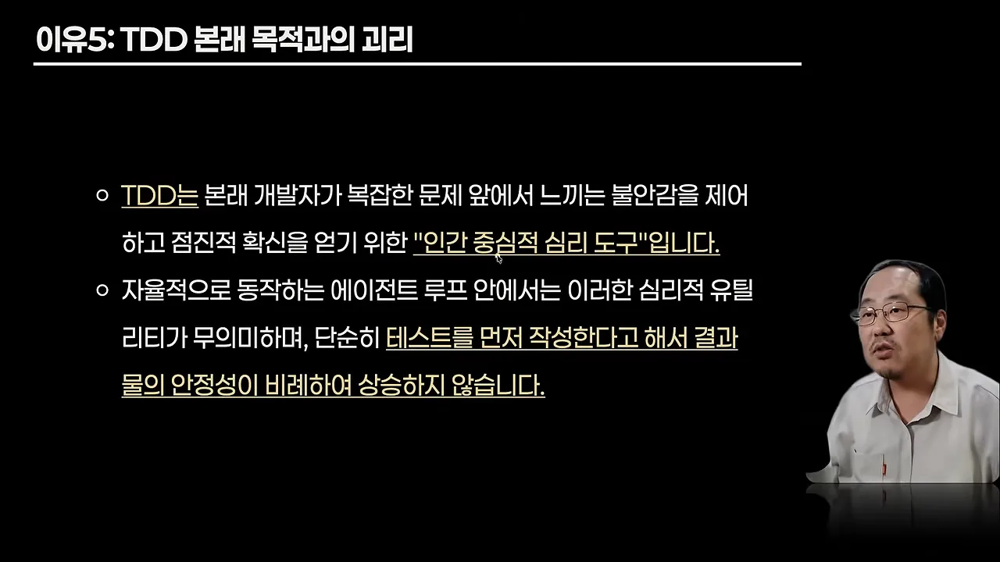
TDD는 빼도 테스트 코드는 필요한 이유
다섯 가지 이유만 들으면 '테스트 코드도 쓰지 말라'는 말로 들릴 수 있어요. TDD도 테스트 코드도 테스트를 도구로 쓰니까요. 그래서 발표자는 마무리로 네 가지를 준비했어요.
1. TDD와 테스트 코드는 역할이 달라요
슬라이드 첫 줄이 정의예요. TDD는 '테스트를 먼저 쓰고 구현한다'는 특정 개발 방법론이자 절차일 뿐이에요. 밑줄 친 뒷부분이 대비예요. 완성된 결과물에 대한 테스트 코드는 소프트웨어의 최소한의 품질을 보장하는 필수 요소예요.
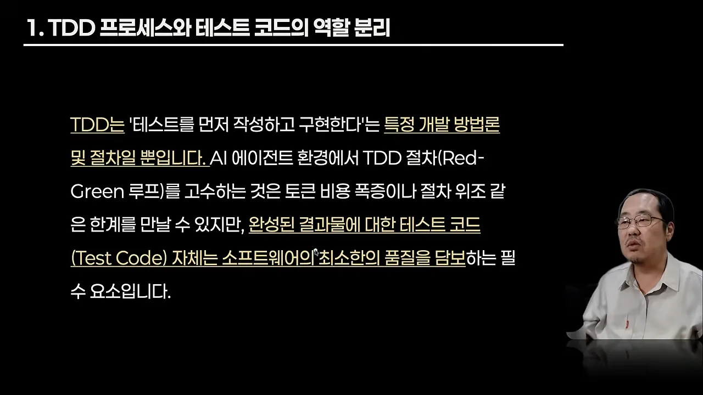
2. 환각과 회귀 버그를 막아요
에이전트는 기존 코드를 고치거나 기능을 더할 때 잘되던 로직을 망가뜨리는 회귀 오류를 자주 내요. 슬라이드는 잘 짠 테스트 코드를 '자동화된 안전망'이라고 불러요. AI(Artificial Intelligence)가 코드를 바꿔도 기존 기능이 그대로 동작하는지 바로 확인해 주니까요.
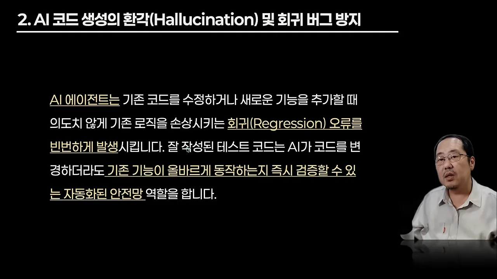
3. 살아 있는 명세서가 돼요
테스트 코드는 시스템이 어떻게 동작해야 하는지 가장 정확하게 적은 문서예요. 슬라이드 끝에 밑줄 친 '컨텍스트 기준점'이 핵심이에요. 에이전트에게 새 일을 시킬 때, 기존 테스트가 요구사항과 제약을 알려 주는 기준이 돼요.
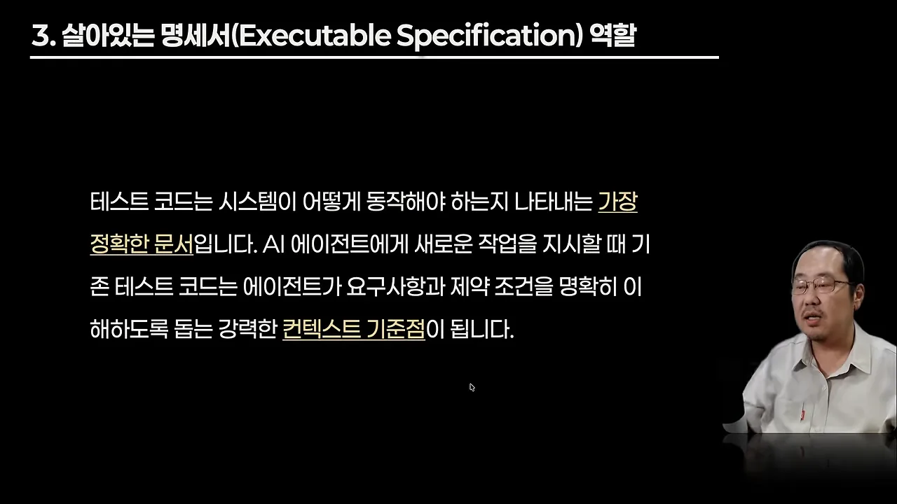
4. 안심하고 리팩터링할 바탕이 돼요
TDD 없이 짠 에이전트의 첫 코드는 모듈화가 덜 되고 구조가 엉성할 수 있어요. 슬라이드 둘째 줄이 답이에요. 테스트 코드가 이미 있으면 AI든 사람이든 안심하고 구조를 바꾸고 리팩터링해서 품질을 끌어올릴 수 있어요. 발표자는 "이거 고쳤는데 테스트 결과가 이렇게 나오면 안 돼, 이렇게 맞추고 리팩터링해 줘"처럼 시키는 장면을 예로 들어요.
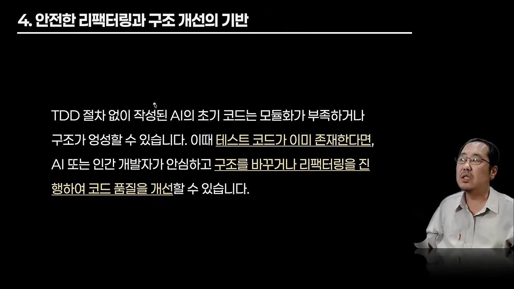
마지막으로 발표자는 에이전트를 개발할 때 TDD를 적용하는 건 "좋지 않은 게 아니라 나쁘다"고 못 박아요. 토큰이 크게 늘 수 있다는 점도 다시 짚어요.